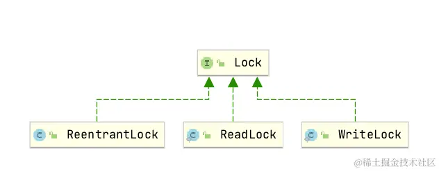
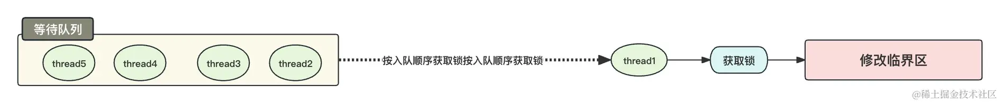
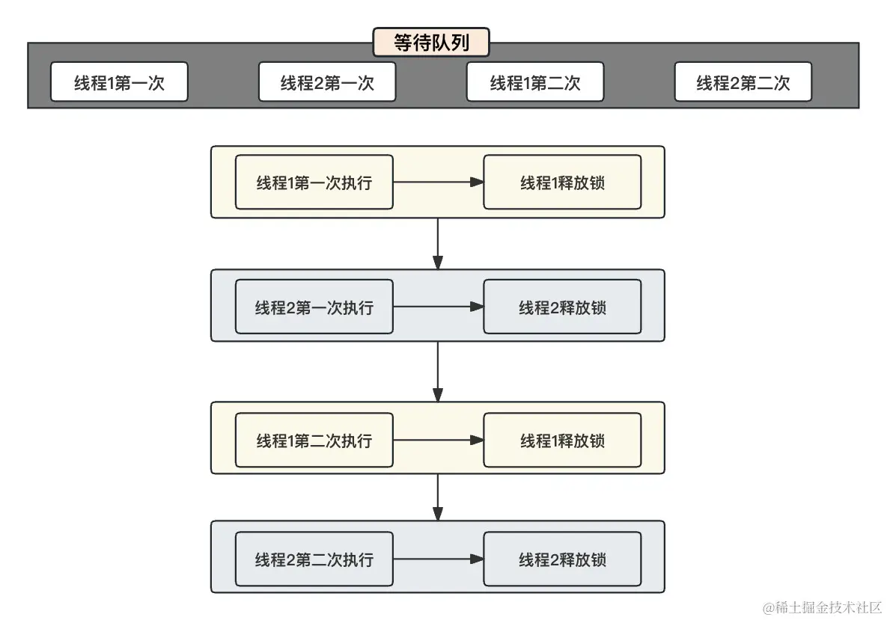
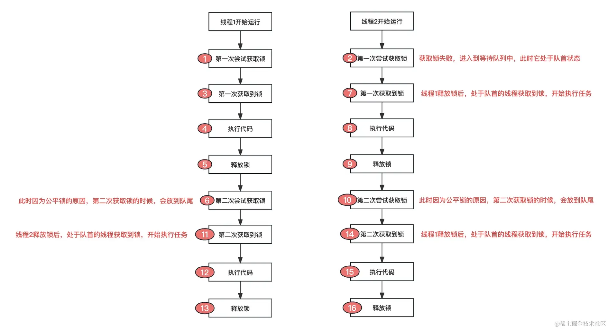
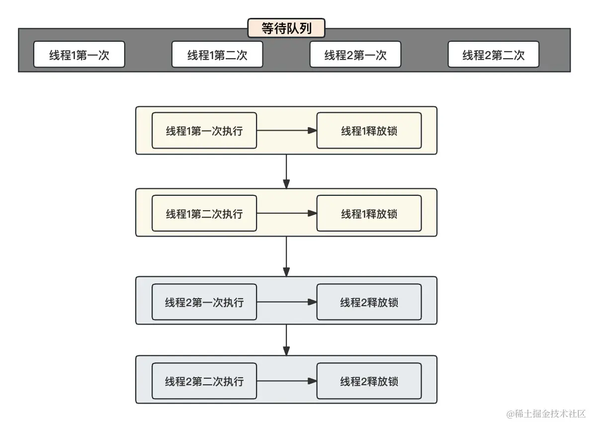
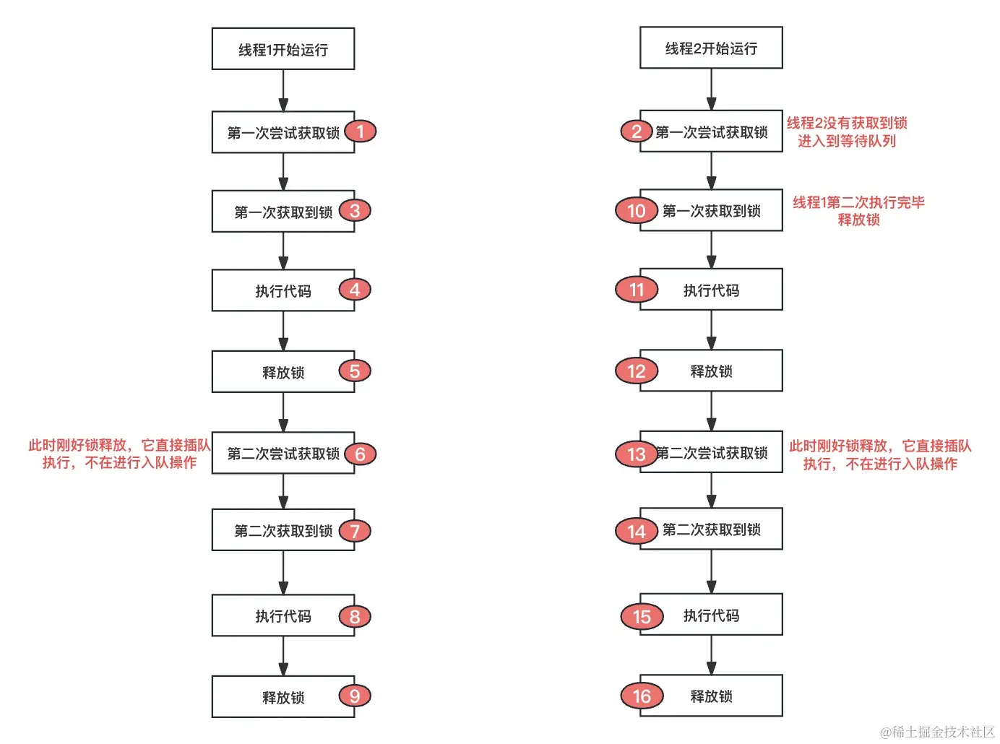
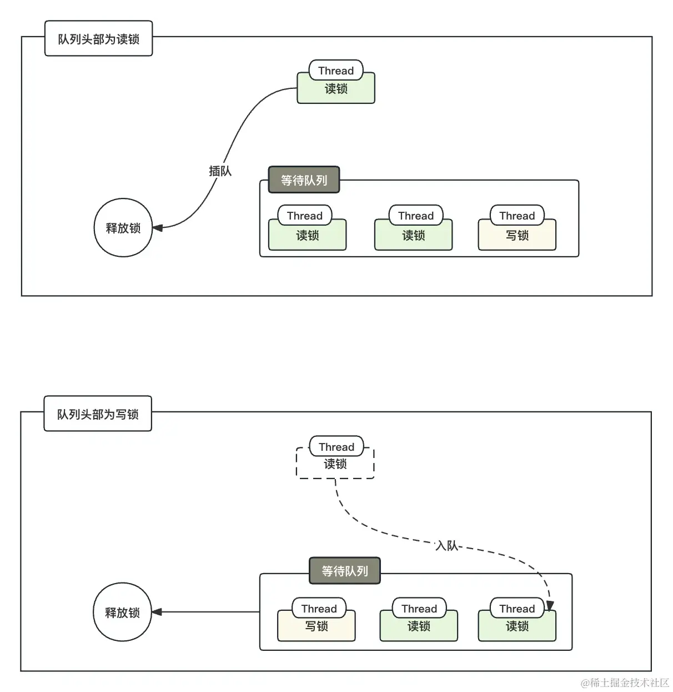

- 01 多线程初阶：解谜多线程世界.md.html
- 02 线程池掌故：管理并发的秘籍.md.html
- 03 锁的奥秘：synchronized 的秘密.md.html
- 04 锁的奥秘：Lock 接口的秘密.md.html
- 05 控制并发流程，并发的巧妙编织.md.html
- 06 ThreadLocal 之珍宝：线程的隐秘宝库.md.html
- 07 CAS：比肩而立的原子魔法.md.html
- 08 容器的魔力：并发世界的宝库.md.html
- 09 结果如何？线程的秘密告白.md.html
- 10 AQS：保证并发安全的终极奥秘（上）.md.html
- 11 AQS：保证并发安全的终极奥秘（中）.md.html
- 12 AQS：保证并发安全的终极奥秘（下）.md.html
- 捐赠
04 锁的奥秘：Lock 接口的秘密
在上一章节，我们详细学习了synchronized的具体使用，深入了解了类锁和实例锁的应用场景、优劣势以及 JDK 1.6 之后的优化。在本节课中，我们将进一步拓展我们的多线程知识，转向学习 Java 中的Lock接口。
Lock接口提供了一种更加灵活和强大的锁定机制，相较于synchronized，它具有更多的扩展性和控制性。通过Lock接口，我们能够实现更复杂的锁定结构，包括但不限于可重入锁、读写锁以及尝试非阻塞地获取锁等特性。这使得在一些特定场景下，Lock接口能够提供更好的性能和更灵活的线程管理手段。
在本章中，我们将深入研究Lock接口的使用方式、不同实现类的特性以及与synchronized相比的优势。我们将探讨如何使用Lock接口来确保线程安全，以及在并发编程中如何充分发挥其潜在优势。通过这次学习，希望你能够建立对于Lock接口的扎实理解，并能够在实际应用中灵活运用这一强大的多线程工具。
在本章节中，我们主要学习 Lock 接口的三个实现：

上图的三种实现可以大致分为两个大类，后续我们将基于下表中的两个大类展开详细的介绍。
| 实现 | 锁分类 | 特性 |
|---|---|---|
| ReentrantLock | 可中断锁 | 独占、可重入、支持线程在等待锁的过程中响应中断信号 |
| 公平锁 | 独占、可重入、按照线程请求锁的顺序分配锁，避免线程饥饿 | |
| 非公平锁 | 独占、可重入、不按照线程请求锁的顺序分配锁，允许插队 | |
| ReentrantReadWriteLock | 读锁 | 共享、可重入、允许多个线程同时获取读锁，但阻止写锁 |
| 写锁 | 独占、可重入、只允许一个线程获取写锁，阻止其他读写锁的获取 |
一、ReentrantLock 锁
ReentrantLock 是 Java 中提供的一种可重入独占锁。它实现了 Lock 接口，相较于传统的 synchronized 关键字，ReentrantLock 提供了更多的灵活性和额外的功能。ReentrantLock 在一些高并发场景下可能具有更好的性能，但也因为其太过灵活，使用时需要小心处理、避免复杂性。
首先，我们简单了解一下ReentrantLock的主要 API :
- lock()。 无限制地等待，只要拿不到锁就死等，直到获取到锁之后才会向下执行，不可被中断。
- tryLock。 尝试获取锁，能够获取到就返回 true，否则返回 false。
- tryLock(long timeout, TimeUnit unit)。 尝试等待规定的时间获取锁，到达等待时间后返回是否获取到了锁；它有两个返回时机，等待到了锁和等待时间到了。该方法可以被中断。
- lockInterruptibly()。 类似于等待时间无限长的 tryLock，也是一个可以被中断的锁 。
- unlock。 将获取到的锁进行解锁。
1. 基础使用
我们使用ReentrantLock模拟一个简单的线上购票业务：首先存在一个车票总数，然后开启线程进行购票，要求保证并发购票下，不会出现超卖的现象。
我们首先进行分析：
在这个场景中，谁是临界区？
记住一个理论：多线程会并发修改谁，谁就是临界区数据。在这个例子中，我们会并发修改车票的剩余数量，那么车票的剩余数量就是临界区数据。
在开发中，我们一般会对修改临界区的代码段进行加锁控制，以求多线程环境下对于临界区修改的可控性。
我们现在知道了需要对谁进行加锁，那么我们就可以进行代码编写了：
public class TicketBookingSystem {
public static void main(String[] args) {
TicketCounter ticketCounter = new TicketCounter(20);
// 创建多个线程进行购票操作
Thread thread1 = new Thread(() -> {
for (int i = 0; i < 10; i++) {
ticketCounter.purchaseTicket(1);
}
});
Thread thread2 = new Thread(() -> {
for (int i = 0; i < 10; i++) {
ticketCounter.purchaseTicket(1);
}
});
Thread thread3 = new Thread(() -> {
for (int i = 0; i < 10; i++) {
ticketCounter.purchaseTicket(1);
}
});
thread1.start();
thread2.start();
thread3.start();
try {
thread1.join();
thread2.join();
thread3.join();
} catch (InterruptedException e) {
e.printStackTrace();
}
// 打印最终剩余车票数量
System.out.println( "最后可售门票: " + ticketCounter.getAvailableTickets());
}
}
class TicketCounter {
/**
* 车票的剩余数量
*/
private int availableTickets;
/**
* 锁
*/
private final Lock lock = new ReentrantLock();
public TicketCounter(int totalTickets) {
this.availableTickets = totalTickets;
}
/**
* 购票动作
* @param quantity 购票的数目
*/
public void purchaseTicket(int quantity) {
//加锁
lock.lock();
try {
if (availableTickets >= quantity) {
//模拟购票所需时间
Thread.sleep(500);
availableTickets -= quantity;
System.out.println(Thread.currentThread().getName() + " 购买 " + quantity + " 票； 剩余的票: " + availableTickets);
} else {
System.out.println(Thread.currentThread().getName() + " 购买失败，车票不足" );
}
} catch (Exception e) {
e.printStackTrace();
}finally {
//解锁
lock.unlock();
}
}
/**
* 返回余票的数目
* @return 余票数目
*/
public int getAvailableTickets() {
return availableTickets;
}
}
上述代码中展示了 lock 锁的具体用法，这里需要注意的是：尽量将 lock() 操作放在 try 的上一行，unLock() 一定要放在 finally 里面；lock() 和 unLock() 一定要成对出现，否则会出现死锁问题！
ReentrantLock 有两种构造函数，默认为非公平锁：
Lock lock = new ReentrantLock();
还可以将 ReentrantLock 设置为公平锁模式，这样定义：
Lock lock = new ReentrantLock(true);
trLock() 与 lock() 不同的是：lock() 在获取不到锁的时候会阻塞等待，直至获取到锁为止！trLock() 是尝试获取锁，无论获取到锁与否都会返回一个值，当获取到锁了返回 true，没有获取到锁返回一个 false，使用方式与 lock() 类似。
public class TryLockTest {
public static void main(String[] args) throws InterruptedException {
Task task = new Task();
Thread thread1 = new Thread(task);
Thread thread2 = new Thread(task);
thread1.start();
thread2.start();
thread1.join();
thread2.join();
}
private static class Task implements Runnable {
private final ReentrantLock lock = new ReentrantLock();
@Override
public void run() {
boolean tryLock = lock.tryLock();
if(tryLock) {
try{
System.out.println(Thread.currentThread().getName() + "获取到了锁." );
Thread.sleep(1000);
} catch (InterruptedException e) {
e.printStackTrace();
} finally {
lock.unlock();
}
}else {
System.out.println(Thread.currentThread().getName() + "没有抢占到锁." );
}
}
}
}
tryLock(long timeout, TimeUnit unit)，它与 tryLock() 类似，不同的是，带参数的 tryLock 如果没有获取到锁，不会立即返回值，而是会等待设置的时间，如果等待时间内获取到了锁，则返回 true，没有获取到则返回为 false，而且它可以响应中断信号（有关中断信号后续会详细介绍，这里先学习它的用法）！
public class TryLockTest2 {
public static void main(String[] args) throws InterruptedException {
Task task = new Task();
Thread thread1 = new Thread(task);
Thread thread2 = new Thread(task);
thread1.start();
thread2.start();
thread1.join();
thread2.join();
}
private static class Task implements Runnable {
private final ReentrantLock lock = new ReentrantLock();
@Override
public void run() {
try {
boolean tryLock = lock.tryLock(2, TimeUnit.SECONDS);
//尝试获取锁
if(tryLock) {
try{
System.out.println(Thread.currentThread().getName() + "获取到了锁." );
Thread.sleep(1000);
} catch (InterruptedException e) {
e.printStackTrace();
} finally {
//一定一定不要忘了释放锁
lock.unlock();
}
}else {
System.out.println(Thread.currentThread().getName() + "没有抢占到锁." );
}
}catch (InterruptedException e) {
System.out.println( "tryLock被中断" );
}
}
}
}
我们的这一段代码，演示了如果线程使用lock.tryLock没有获取到锁，则等待两秒，等待期间如果获取到了锁，就返回 true 继续向下执行！
了解了 ReentrantLock 的使用方式之后，这里我们再学习一些 ReentrantLock 更加深入的使用。
2. 公平锁
公平锁是一种多线程同步机制，它遵循一种公平策略，确保线程按照请求锁的顺序获得锁。具体来说，如果有多个线程在等待锁，公平锁会按照线程请求锁的顺序授予锁的许可，即先来先得的原则。
公平锁会遵循线程请求锁的顺序，确保等待时间较长的线程优先获得锁。公平锁通常维护一个等待队列，其中包含了等待锁的线程。当锁被释放时，从等待队列中选择下一个线程来获得锁，而不是任意选择一个线程。
我们可以尝试用一张图来理解公平锁的定义：

可以看到，公平锁内部维护了一个等待队列，任务会根据请求锁的先后顺序依次进入到队列中，后续这些任务会根据队列的先后顺序去操作临界区。
公平锁的实现也是基于ReentrantLock，我们上文说过，ReentrantLock默认是非公平锁，如果想要改变它，在定义的时候传递一个 true 即可：
protected final static ReentrantLock LOCK = new ReentrantLock(true);
我们计划设计这样一个需求：现在存在 2 个线程，每一个线程在释放锁之后，再次获取一次锁，因为是公平锁的原因，因此线程在释放锁之后再次获取锁会将自己排在任务队列的队尾。这两个线程的执行顺序如下：

想要演示的结果如上图，我们代码需要按照这样的方式运行，才能达到上图公平锁的特点：

了解了执行顺序后，我们使用公平锁进行运行任务，看执行结果是否与我们设计的执行顺序一致：
public class FairLockTest {
protected final static ReentrantLock LOCK = new ReentrantLock(true);
public static void main(String[] args) throws InterruptedException {
Task target = new Task();
List<Thread> threadList = new ArrayList<>();
for (int i = 0; i < 2; i++) {
Thread thread1 = new Thread(target, "线程" +i);
threadList.add(thread1);
}
for (Thread thread : threadList) {
Thread.sleep(20);
thread.start();
}
}
private static class Task implements Runnable {
@Override
public void run() {
//第一次获取锁
LOCK.lock();
try {
System.out.println(Thread.currentThread().getName() + "获取到了锁." );
try {
Thread.sleep(1000);
} catch (InterruptedException e) {
e.printStackTrace();
}
}finally {
//第一次释放锁
LOCK.unlock();
}
//第二次获取锁
LOCK.lock();
try {
System.out.println(Thread.currentThread().getName() + "获取到了锁." );
try {
Thread.sleep(1000);
} catch (InterruptedException e) {
e.printStackTrace();
}
}finally {
//第二次释放锁
LOCK.unlock();
}
}
}
}
执行结果如下:
线程0获取到了锁.
线程1获取到了锁.
线程0获取到了锁.
线程1获取到了锁.
与我们预期的顺序一致，公平锁最大的特点就是：它能够保证每一个任务都有机会获取锁，谁先申请锁谁就先执行，谁后申请就去排队，就像我们去银行取钱挂号一样，银行的工作人员会根据挂号的先后顺序依次办理业务！
3. 非公平锁
非公平锁与公平锁相反，它不严格遵循公平性原则，而允许在锁释放时，选择任何等待线程来获得锁。
在操作系统中，线程的唤醒也需要消耗时间，如果在唤醒期间突然来了一个线程，那么非公平锁可以立即分配一个锁，而无须让该线程进入等待队列，直接拿到锁，省略了排队这一步。
让我们通过一个例子来更好地理解非公平锁的工作原理：
假设你在医院排队缴费，当轮到你缴费时，你正在低头玩手机。在这时，有一个人插到了你前面，他问缴费窗口药房在哪。他得到答复之后就离开了。接着，轮到你缴费。在这个情况下，你会发现，别人插队这件事并没有很影响你的正常流程。
这个例子说明了非公平锁的行为，它允许等待的线程在释放锁后，后面的线程根据某种策略来获取锁，而不是严格按照先来先服务的原则。这可以提高性能，但可能会导致一些线程在某些情况下等待较长时间。
我们看一下它的定义方式：ReentrantLock 本来就是非公平锁，当然我们也可以显式地指定为 false，false 就是非公平锁。
protected final static ReentrantLock LOCK = new ReentrantLock(false)
我们还是以上面公平锁的例子来说明，由于一个线程会连续获取两次，而非公平锁不会遵循先来后到的原则，所以它会出现以下结果：

那么它的线程入队逻辑就变成了下图这样：

我们可以看到它与公平锁存在本质的区别就是执行顺序。代码与公平锁的代码一致，我们只需要在构建锁之后，指定为非公平锁即可，由于线程 1 释放锁后会立即再次获取一次锁，所以非公平锁会直接让其获取到锁，而非是唤醒等待队列中的锁：
protected final static ReentrantLock LOCK = new ReentrantLock();
非公平锁最大的特点就是当一个任务获取锁的时候，如果恰好前面的线程释放锁，此时当前任务不再进行排队，直接插队执行任务！非公平锁在高并发场景下，会省略大量的唤醒线程的操作，但是极端情况下会造成等待队列中的任务一直被插队一直执行不了！
4. 可中断锁
可中断锁就是线程在等待锁的过程中可以响应中断信号，如果一个线程在等待锁时被中断，它会立即退出等待状态，并抛出 InterruptedException。这种锁的主要目的是提供更好的线程控制，以避免线程在等待锁的过程中无限期地阻塞。
我们设想这样一种场景：线程 A 在等待锁然后处理任务，结果其他的线程将这个任务处理完毕了，此时线程 A 也就不需要等待锁执行这个任务了，所以我们就需要将这个线程 A 获取锁的过程给停止掉，这就是可中断锁。
在 ReentrantLock 中，存在两种可中断锁的 API，tryLock(long timeout, TimeUnit unit) 和lockInterruptibly() 。tryLock 的方式在上面已经给过案例了，这里只演示lockInterruptibly：
public class InterruptReentrantLockTest {
protected final static ReentrantLock LOCK = new ReentrantLock();
public static void main(String[] args) throws InterruptedException {
Task target = new Task();
Thread thread1 = new Thread(target, "线程1" );
Thread thread2 = new Thread(target, "线程2" );
thread1.start();
//睡眠的原因是先尝试让线程1 获取锁
TimeUnit.SECONDS.sleep(1);
thread2.start();
//线程2等待锁的过程中中断等待
thread2.interrupt();
}
private static class Task implements Runnable {
@Override
public void run() {
try {
System.out.println(Thread.currentThread().getName() + "尝试获取锁." );
LOCK.lockInterruptibly();
try {
System.out.println(Thread.currentThread().getName() + "获取到了锁." );
try {
TimeUnit.SECONDS.sleep(5);
} catch (InterruptedException e) {
e.printStackTrace();
}
}finally {
LOCK.unlock();
}
} catch (InterruptedException e) {
System.out.println(Thread.currentThread().getName() + "等待锁的时候被中断,结束等待." );
}
}
}
}
可中断锁的特性就是，它允许人为地将获取锁的过程给强行终止掉！
二、ReentrantReadWriteLock 锁
ReentrantReadWriteLock 是读写锁，它可以用于管理多个线程对共享资源的并发访问。与标准的互斥锁不同，读写锁将锁分为两种类型：读锁（共享锁）和写锁（排他锁）。这种分离的锁类型允许多个线程同时读取共享资源，但在进行写操作时需要排他地获取锁。
从 ReentrantReadWriteLock 中可以衍生出 ReadLock（读锁）和 WriteLock（写锁）。
- 读锁：读锁的类型是共享锁，它允许多个线程同时操作临界区。
- 写锁：写锁的类型是排他锁，它允许同时只能有一个线程占有写锁。
这里需要注意，写锁是独占锁，写锁持有期间，不允许有其他的读锁或者写锁占有。
简单来说，读锁存在的时候其他线程也可以获取读锁，但是不能获取写锁；写锁存在的时候，其他线程读锁写锁都不允许获取；读锁同时可以有多个，但是写锁同时只能有一个。
下面我们将针对上述的两种锁类型分别介绍。
1. 读锁
读锁是共享锁，允许多个线程同时持有读锁：
public class SharedLockTest {
private final static ReentrantReadWriteLock REENTRANT_READ_WRITE_LOCK = new ReentrantReadWriteLock();
/**
* 获取读锁
*/
private final static ReentrantReadWriteLock.ReadLock READ_LOCK = REENTRANT_READ_WRITE_LOCK.readLock();
public static void main(String[] args) {
Task task = new Task();
new Thread(task, "线程1" ).start();
new Thread(task, "线程2" ).start();
new Thread(task, "线程3" ).start();
}
private static class Task implements Runnable {
@Override
public void run() {
System.out.println(Thread.currentThread().getName() + "开始获取数据." );
READ_LOCK.lock();
try {
System.out.println(Thread.currentThread().getName() + "开始读取数据." );
TimeUnit.SECONDS.sleep(3);
System.out.println(Thread.currentThread().getName() + "执行完毕，释放锁." );
} catch (InterruptedException e) {
e.printStackTrace();
} finally {
READ_LOCK.unlock();
}
}
}
}
执行结果如下：
线程1开始获取数据.
线程3开始获取数据.
线程2开始获取数据.
线程1开始读取数据.
线程3开始读取数据.
线程2开始读取数据.
线程3执行完毕，释放锁.
线程1执行完毕，释放锁.
线程2执行完毕，释放锁.
从结果我们可以看到，3 个线程是同时获取到了读锁，并同时执行的，这符合共享锁的定义。
2. 写锁
写锁是独占锁，同时只有存在一条线程获取到锁，其余锁必须处于等待写锁的释放：
public class WriteLockTest {
private final static ReentrantReadWriteLock REENTRANT_READ_WRITE_LOCK = new ReentrantReadWriteLock();
/**
* 获取写锁
*/
private final static ReentrantReadWriteLock.WriteLock WRITE_LOCK = REENTRANT_READ_WRITE_LOCK.writeLock();
public static void main(String[] args) {
Task task = new Task();
new Thread(task, "线程1" ).start();
new Thread(task, "线程2" ).start();
new Thread(task, "线程3" ).start();
}
private static class Task implements Runnable {
@Override
public void run() {
System.out.println(Thread.currentThread().getName() + "开始获取锁." );
WRITE_LOCK.lock();
try {
System.out.println(Thread.currentThread().getName() + "获取锁成功开始写入数据." );
TimeUnit.SECONDS.sleep(3);
System.out.println(Thread.currentThread().getName() + "执行完毕，释放锁." );
} catch (InterruptedException e) {
e.printStackTrace();
} finally {
WRITE_LOCK.unlock();
}
}
}
}
最终的执行结果如下：
线程2开始获取锁.
线程2获取锁成功开始写入数据.
线程1开始获取锁.
线程3开始获取锁.
线程2执行完毕，释放锁.
线程1获取锁成功开始写入数据.
线程1执行完毕，释放锁.
线程3获取锁成功开始写入数据.
线程3执行完毕，释放锁.
从结果中可以看到，写锁是独占锁，不允许其他线程共享。其执行顺序也是必须前一个线程释放锁后，后面的线程才能获取到锁。
我们上面单独演示了读锁和写锁的使用，下面我们模拟一个售票的功能，以便于你更加清晰地认识读写锁。
有一个火车购票系统，它有两个功能，可以查询余票和购票。根据功能分析，查询是读操作，适用于读锁；购票时写入，适用于写锁。这里需要注意，读写锁也可以使用公平锁和非公平锁，默认为非公平锁。这里为了方便观察结果，我们暂时将其设置为公平锁（有关它的非公平锁比较特殊，后续我会详细说明），代码如下：
public class BuyTicketReadWriteLock {
private final static ReentrantReadWriteLock REENTRANT_READ_WRITE_LOCK = new ReentrantReadWriteLock(true);
/**
* 获取读锁
*/
private final static ReentrantReadWriteLock.ReadLock READ_LOCK = REENTRANT_READ_WRITE_LOCK.readLock();
/**
* 获取写锁
*/
private final static ReentrantReadWriteLock.WriteLock WRITE_LOCK = REENTRANT_READ_WRITE_LOCK.writeLock();
private static class Task {
/**
* 余票信息
*/
private int remainingVotes;
public Task(int remainingVotes) {
this.remainingVotes = remainingVotes;
}
/**
* 购票
*/
public void buyTicket(){
System.out.println(Thread.currentThread().getName() + "尝试获取写锁，准备购票.");
WRITE_LOCK.lock();
try {
System.out.println(Thread.currentThread().getName() + "获取到写锁，开始购票.");
if(remainingVotes >0) {
remainingVotes--;
Thread.sleep(2000);
System.out.println(Thread.currentThread().getName() + "购票成功，余票减少.");
}else {
System.out.println("剩余票数为:" + remainingVotes + "， 购买失败.");
}
} catch (InterruptedException e) {
e.printStackTrace();
} finally {
WRITE_LOCK.unlock();
}
}
/**
* 查询票
*/
public void selectTicket(){
System.out.println(Thread.currentThread().getName() + "尝试获取读锁，准备查询票.");
READ_LOCK.lock();
try {
System.out.println(Thread.currentThread().getName() + "获取到读锁，当前余票为: " + remainingVotes);
Thread.sleep(1000);
System.out.println(Thread.currentThread().getName() + "查询成功，释放读锁.");
} catch (InterruptedException e) {
e.printStackTrace();
} finally {
READ_LOCK.unlock();
}
}
}
public static void main(String[] args) {
Task task = new Task(4);
new Thread(task::selectTicket, "线程1").start();
new Thread(task::selectTicket, "线程2").start();
new Thread(task::buyTicket, "线程3").start();
new Thread(task::selectTicket, "线程4").start();
}
}
执行结果如下：
线程1尝试获取读锁，准备查询票.
线程2尝试获取读锁，准备查询票.
线程1获取到读锁，当前余票为: 4
线程2获取到读锁，当前余票为: 4
线程3尝试获取写锁，准备购票.
线程4尝试获取读锁，准备查询票.
线程1查询成功，释放读锁.
线程2查询成功，释放读锁.
线程3获取到写锁，开始购票.
线程3购票成功，余票减少.
线程4获取到读锁，当前余票为: 3
线程4查询成功，释放读锁.
通过结果我们可以看到，读锁和写锁是不能共存的，当存在读锁的时候，写锁不允许获取锁，但是读锁查询票是可以并发查的，一旦涉及到写锁，就开始独占，剩余的查询需要等待写锁释放才能获取到读锁！
3. 读写锁的公平性
读写锁也可以设置为非公平锁，ReentrantReadWriteLock 默认就是非公平锁。ReentrantReadWriteLock 默认使用的是非公平锁，如果需要改变类型，需要在构造方法中修改，如下面的代码，就是将它修改为公平锁：
ReentrantReadWriteLock REENTRANT_READ_WRITE_LOCK = new ReentrantReadWriteLock(true);
非公平读写锁的主要特点是在读锁之间不强制遵守请求顺序，但对于写锁，通常仍然会维护一个队列以确保操作的顺序性。这有助于避免写操作与其他读写操作之间的竞争条件和不一致性。
大多数的业务场景都是读多写少，假设非公平读写锁插队逻辑和常规的非公平锁一致，那么极端情况下就会出现这样一种情况，源源不断的读锁过来读取数据，导致写锁迟迟得不到执行！ 所以，非公平读写锁主要针对读锁的设置。当锁的等待队列的头部是写锁时，不允许读锁插队，即写锁有更高的优先级。这样可以确保写锁不会长时间等待，以避免写操作的等待时间过长。
我们使用一张图来帮助你理解：

通过图可以看到，当队头为读锁的时候，允许插队，当队头为写锁的时候，不允许插队。
三、可重入特性
我们上面介绍的 ReentrantLock、ReentrantReadWriteLock 都是可重入锁，可重入锁的特性就是同一个线程可以多次获取已经持有的锁。
比如，我们使用 ReentrantLock，在一个加锁的方法中调用另外一个加锁的方式，此时内层方法不会进入等待状态而是直接获取到锁：
public class ReentrantLockExample {
/**
* 创建一个可重入锁
*/
private final ReentrantLock lock = new ReentrantLock();
public static void main(String[] args) {
ReentrantLockExample example = new ReentrantLockExample();
example.outerMethod();
}
// 外层方法
public void outerMethod() {
lock.lock(); // 获取锁
try {
System.out.println("线程："+Thread.currentThread().getName() + "外层加锁成功; 此时加锁次数为:" + lock.getHoldCount());
System.out.println("线程："+Thread.currentThread().getName() + "; 外层方法开始执行");
innerMethod(); // 调用内层方法
System.out.println("线程："+Thread.currentThread().getName() + "; 外层方法执行结束");
} finally {
lock.unlock(); // 释放锁
System.out.println("线程："+Thread.currentThread().getName() + "外层方法释放锁成功; 此时加锁次数为:" + lock.getHoldCount());
}
}
// 内层方法
public void innerMethod() {
//获取锁不会被阻塞
lock.lock();
try {
System.out.println("线程："+Thread.currentThread().getName() + "内层加锁成功; 此时加锁次数为:" + lock.getHoldCount());
System.out.println("线程："+Thread.currentThread().getName() + "; 内层方法执行");
System.out.println("线程："+Thread.currentThread().getName() + "; 内层方法结束");
} finally {
lock.unlock(); // 释放锁
System.out.println("线程："+Thread.currentThread().getName() + "内层方法释放锁成功; 此时加锁次数为:" + lock.getHoldCount());
}
}
}
运行结果如下：
线程：main外层加锁成功; 此时加锁次数为:1
线程：main; 外层方法开始执行
线程：main内层加锁成功; 此时加锁次数为:2
线程：main; 内层方法执行
线程：main; 内层方法结束
线程：main内层方法释放锁成功; 此时加锁次数为:1
线程：main; 外层方法执行结束
线程：main外层方法释放锁成功; 此时加锁次数为:0
从结果也可以看出，内层方法是没有等待外层方法的锁释放的，而是直接获取到锁。
在 ReentrantLock 内部维护了一个加锁的次数，可重入锁每加锁一次，加锁次数 +1，每释放一次锁，加锁次数 -1，当加锁次数为 0 的时候，该线程彻底释放这个锁。可以通过 getHoldCount 来获取加锁次数。
四、总结
在本章节中，我们不仅深入研究了Lock接口的基础使用，还从各种特性出发，详细介绍了Lock的两种重要衍生特性。
首先，我们聚焦于ReentrantLock，它是一种可重入锁，允许线程在持有锁的情况下多次进入同一个锁保护的代码块。我们详细讨论了ReentrantLock的使用方法、锁的获取和释放机制，以及与传统synchronized关键字相比的一些优势，例如更灵活的锁定和可中断性。
进一步地，我们还探究了ReentrantReadWriteLock，这是由ReentrantLock衍生出的读写锁。我们详细分析了读写锁的设计理念，以及它如何在允许多个线程同时读取数据的同时，确保写操作的互斥性。通过对读写锁的深入了解，我们能够更好地在不同场景下选择适当的锁，以优化程序的并发性能。
通过本章的学习，相信你对Lock接口及其衍生特性应该有了更全面、深入的认识。这些知识将为你在实际开发中处理复杂的多线程场景提供更灵活、更高效的工具和策略。
© 2019 - 2023 Liangliang Lee. Powered by gin and hexo-theme-book.